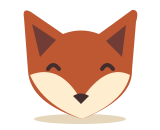

<!doctype html><html lang="de-CH"><meta charset="utf-8"><meta name="viewport" content="width=device-width,initial-scale=1"><meta name="theme-color" content="#fbf4e3"><link rel="manifest" href="manifest.webmanifest"><link rel="apple-touch-icon" href="icon.png"><link rel="stylesheet" href="style.css"><title>Meine Wörterwelt</title><header><button id="home" aria-label="Startseite">⌂</button><a href="./">Zur Wörterinsel</a><button id="parent">Für Eltern</button></header><main><section id="stage" aria-live="polite"></section></main><footer><button id="repeat">◖)) Anhören</button><button id="mute" aria-pressed="false">Ton aus</button></footer><script type="module" src="app.js"></script></html>
